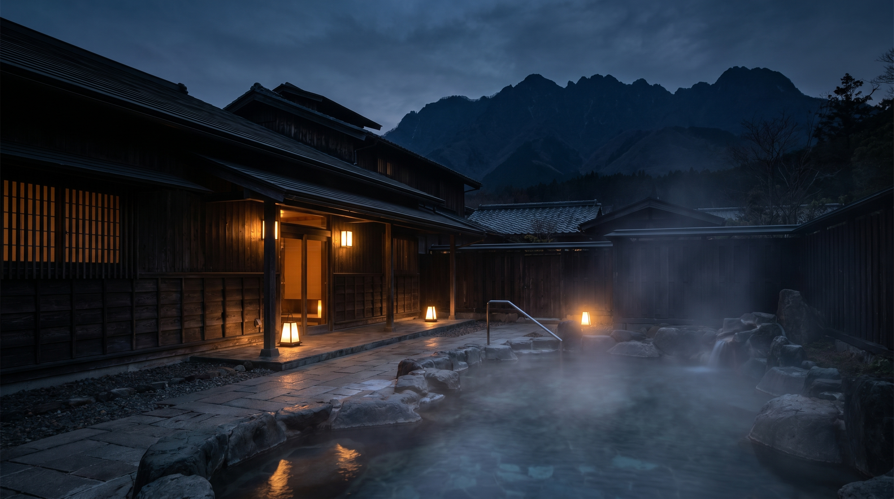

壱
COURSE I
山家会席
飛騨の旬を一品ずつ、八寸から椀、焼八寸、留椀まで。最も基本となる、宿の顔。
¥ 22,000 〜 / 一泊二食

Kokuboku-an · Hida
北アルプスの懐、一日六組だけの湯宿。
時間を手放す、静謐なひとときを。
ご予約 / RESERVATION
※ ご予約は予約システム（Beds24）と連携し、空室・料金をリアルタイムに表示します。日本語・English・한국어・中文の4言語に対応。
The Inn
標高八百米、谷あいに佇む全六室の宿。
客室はすべて源泉かけ流しの露天を備え、
隣室の気配も届かぬ静けさのなかで、
ただ湯と、火と、季節の移ろいに身をゆだねる。
もてなしは控えめに、しかし行き届いて。
01
全六室すべてに専用露天。誰にも会わず、いつでも湯に。山の湯は無色透明、肌にやわらかい単純泉。
02
朝に届く山の幸と、囲炉裏の炭火。器は飛騨の木と土。三つの献立から、その日の気分でお選びを。
03
広いロビーも喧騒もない。あるのは時間だけ。チェックインからお発ちまで、自分の刻で過ごす。
Dining
その日の山の恵みに合わせ、三つの夕食からお選びいただけます。
COURSE I
飛騨の旬を一品ずつ、八寸から椀、焼八寸、留椀まで。最も基本となる、宿の顔。
¥ 22,000 〜 / 一泊二食
COURSE II
囲炉裏の炭火で、飛騨牛を一枚ずつ。脂の甘みと炭の香りを、最も贅沢に味わう一献。
¥ 30,000 〜 / 一泊二食
COURSE III
岩魚と、谷で摘んだ山菜を主に。素材の淡さを愉しむ、軽やかな滋味の献立。
¥ 20,000 〜 / 一泊二食
※ 献立は仕入れにより変わります。アレルギー・苦手な食材はご予約時にお申し付けください。
Rooms
客室は六室、それぞれに表情を変えて。
いずれも専用の露天と、山を望む広縁を備えます。
飛騨の職人による木の設えのなかで、
ただ静かに、夜を過ごす。
Access
Reservation
空室・料金は予約システムと連動し、リアルタイムに表示されます。
お電話でのご予約・ご相談も承っております。